Prep lines for a later day
Previews on synthetic data, 390 px. Today is Wednesday 18 Nov; the later day is Saturday 21 Nov. Before is the book as it is now.
The later day, where the line is added
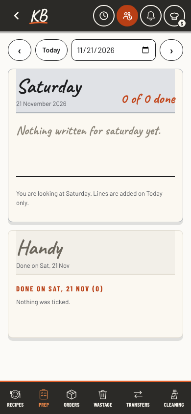
Before. A chef can open Saturday but cannot write on it.
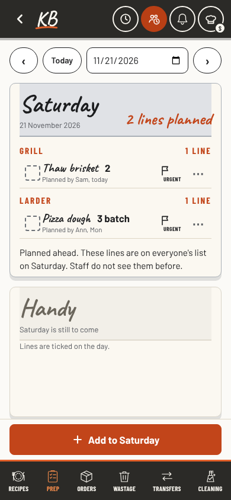
A. Open the day. Today's day row, then Add to Saturday. 5 taps. Scored 4 to 4.5.
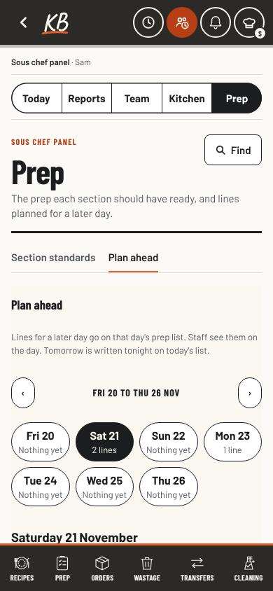
B. Chef panel. A week with counts, its own form. 6 taps, reads. Scored 2.
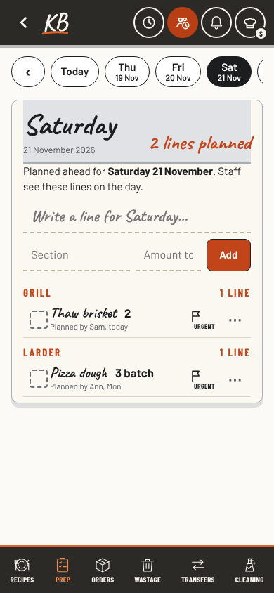
C. Day strip. One tap to a named day, form always open. 2 taps. Scored 3.
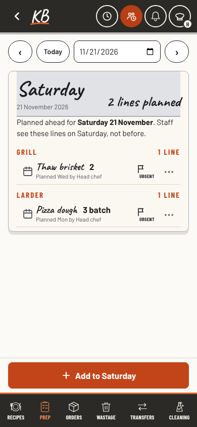
Recommended: the mix. A's way in, C's note and one column, a calendar instead of a box, graphite count. Admin only.
Adding, and what the others see
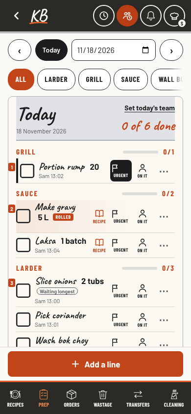
Before. Today, as a chef sees it. Unchanged in A and the mix.
A. Today's Add sheet, named for the day, slip says where it went.
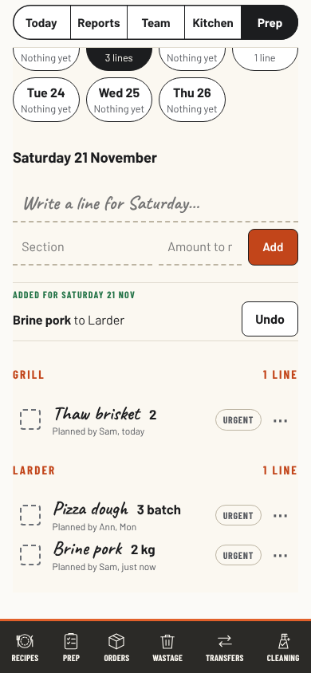
B. The inline form and lines further down the panel page.
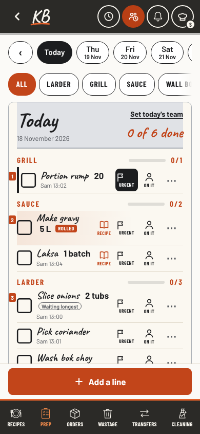
C. The strip replaces the day row on today's page.
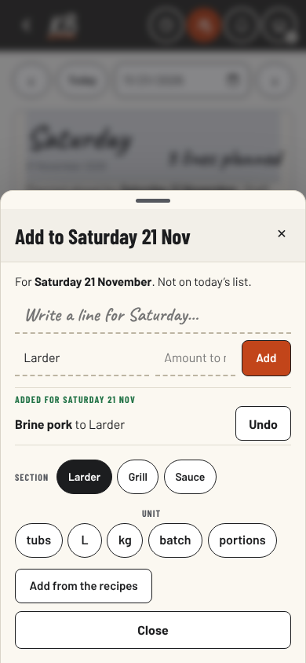
Mix. As A: "Add to Saturday 21 Nov", "Added for Saturday 21 Nov".
The mix for everyone else
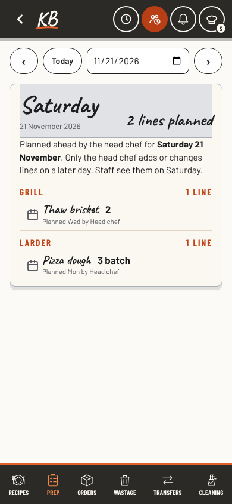
Sous chef on Saturday: the lines, read only.
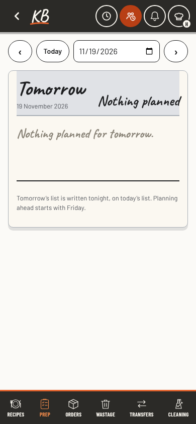
Tomorrow takes no plans: it is written tonight on today's list.
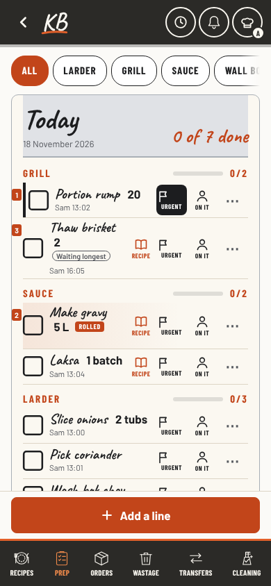
Before, on the day: the line reads "Waiting longest", "Sam 16:05" at 14:00.
Mix, on the day: "Planned Sun by Head chef", no Waiting longest.
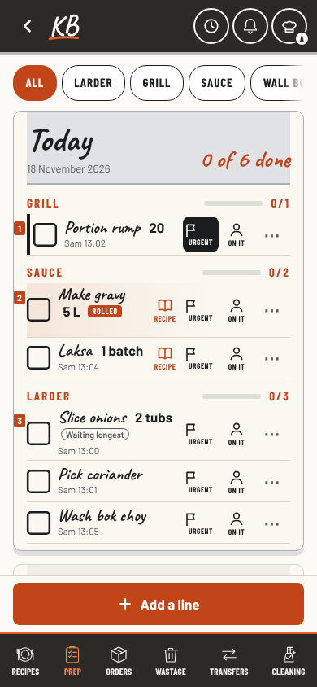
Staff today: no change in any design.